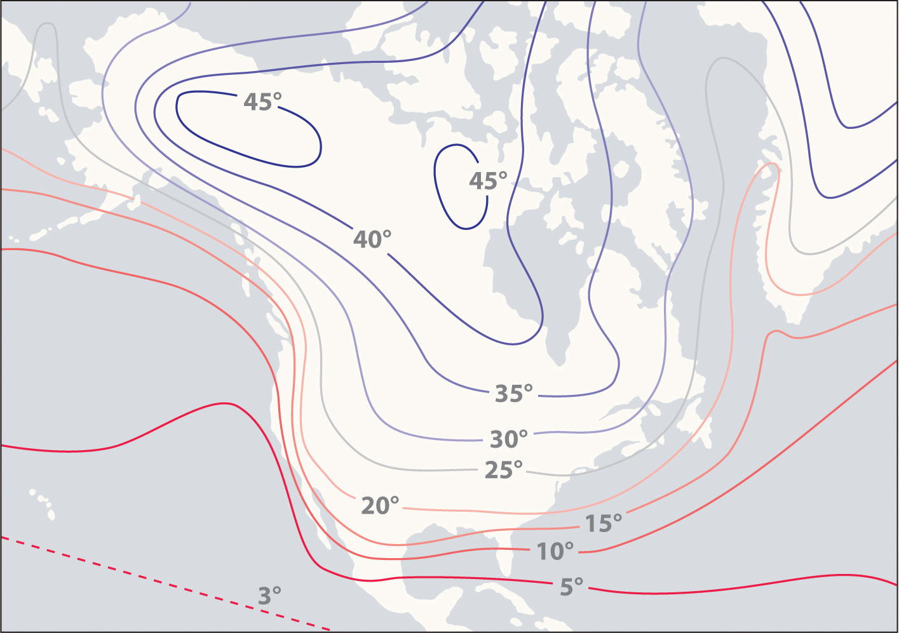
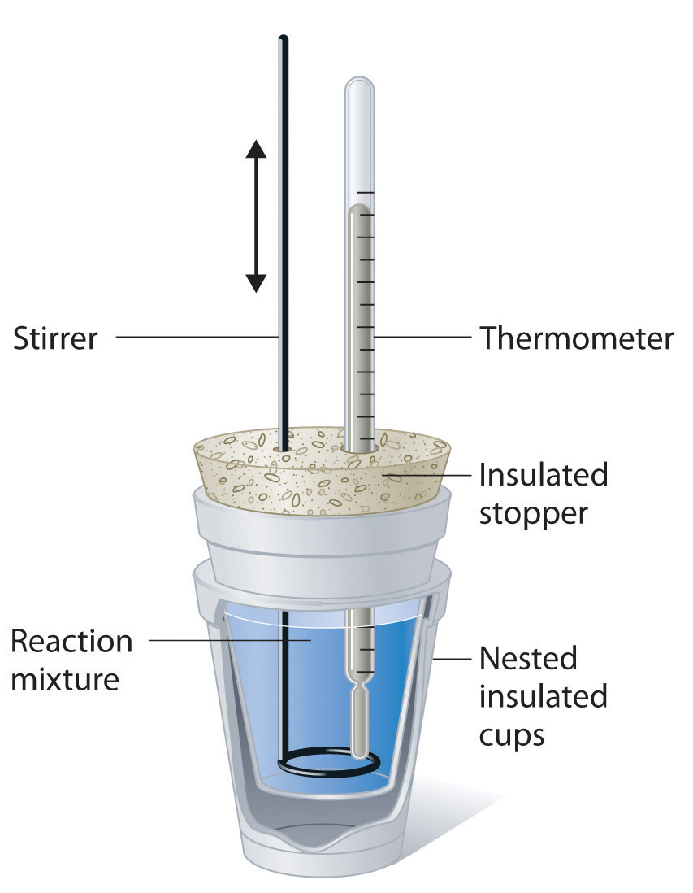
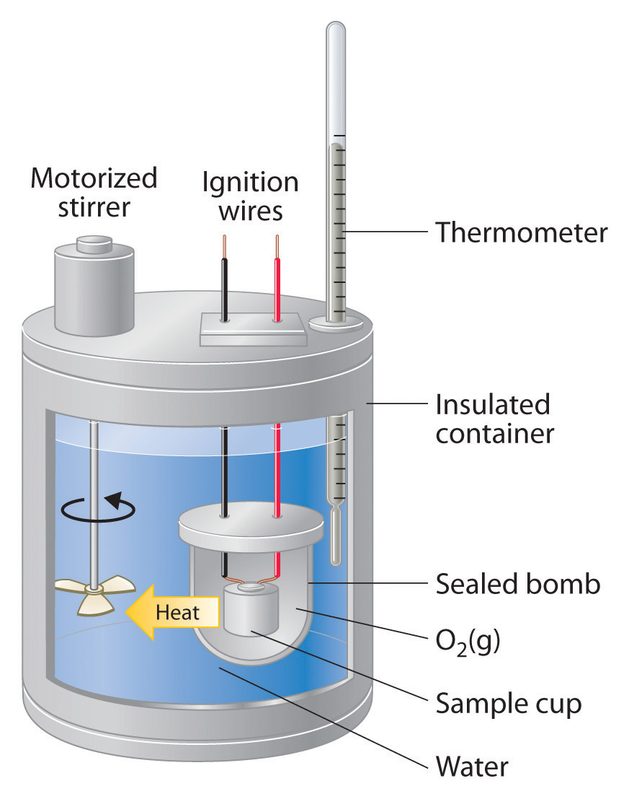

Thermal energy itself cannot be measured easily, but the temperature change caused by the flow of thermal energy between objects or substances can be measured. CalorimetryA set of techniques used to measure enthalpy changes in chemical processes. describes a set of techniques employed to measure enthalpy changes in chemical processes using devices called calorimeters.
To have any meaning, the quantity that is actually measured in a calorimetric experiment, the change in the temperature of the device, must be related to the heat evolved or consumed in a chemical reaction. We begin this section by explaining how the flow of thermal energy affects the temperature of an object.
We have seen that the temperature of an object changes when it absorbs or loses thermal energy. The magnitude of the temperature change depends on both the amount of thermal energy transferred (q) and the heat capacity of the object. Its heat capacity (C)The amount of energy needed to raise the temperature of an object 1°C. The units of heat capacity are joules per degree Celsius is the amount of energy needed to raise the temperature of the object exactly 1°C; the units of C are joules per degree Celsius (J/°C). The change in temperature (ΔT) is
Equation 5.34
where q is the amount of heat (in joules), C is the heat capacity (in joules per degree Celsius), and ΔT is Tfinal − Tinitial (in degrees Celsius). Note that ΔT is always written as the final temperature minus the initial temperature. The value of C is intrinsically a positive number, but ΔT and q can be either positive or negative, and they both must have the same sign. If ΔT and q are positive, then heat flows from the surroundings into an object. If ΔT and q are negative, then heat flows from an object into its surroundings.
The heat capacity of an object depends on both its mass and its composition. For example, doubling the mass of an object doubles its heat capacity. Consequently, the amount of substance must be indicated when the heat capacity of the substance is reported. The molar heat capacity (Cp)The amount of energy needed to increase the temperature of 1 mol of a substance by 1°C. The units of are is the amount of energy needed to increase the temperature of 1 mol of a substance by 1°C; the units of Cp are thus J/(mol·°C).The subscript p indicates that the value was measured at constant pressure. The specific heat (Cs)The amount of energy needed to increase the temperature of 1 g of a substance by 1°C. The units of are is the amount of energy needed to increase the temperature of 1 g of a substance by 1°C; its units are thus J/(g·°C). We can relate the quantity of a substance, the amount of heat transferred, its heat capacity, and the temperature change in two ways:
Equation 5.35
q = nCpΔT, where n = number of moles of substanceEquation 5.36
q = mCsΔT, where m = mass of substance in gramsThe specific heats of some common substances are given in Table 5.3 "Specific Heats of Selected Substances at 25°C". Note that the specific heat values of most solids are less than 1 J/(g·°C), whereas those of most liquids are about 2 J/(g·°C). Water in its solid and liquid states is an exception. The heat capacity of ice is twice as high as that of most solids; the heat capacity of liquid water, 4.184 J/(g·°C), is one of the highest known.
Table 5.3 Specific Heats of Selected Substances at 25°C
| Compound | Specific Heat [J/(g·°C)] |
|---|---|
| H2O(l) | 4.184 |
| H2O(g) | 2.062 |
| CH3OH (methanol) | 2.531 |
| CH3CH2OH (ethanol) | 2.438 |
| n-C6H14 (n-hexane) | 2.270 |
| C6H6 (benzene) | 1.745 |
| C(s) (graphite) | 0.709 |
| C(s) (diamond) | 0.509 |
| Al(s) | 0.897 |
| Fe(s) | 0.449 |
| Cu(s) | 0.385 |
| Au(s) | 0.129 |
| Hg(l) | 0.140 |
| NaCl(s) | 0.864 |
| MgO(s) | 0.921 |
| SiO2(s) (quartz) | 0.742 |
| CaCO3(s) (calcite) | 0.915 |
The high specific heat of liquid water has important implications for life on Earth. A given mass of water releases more than five times as much heat for a 1°C temperature change as does the same mass of limestone or granite. Consequently, coastal regions of our planet tend to have less variable climates than regions in the center of a continent. After absorbing large amounts of thermal energy from the sun in summer, the water slowly releases the energy during the winter, thus keeping coastal areas warmer than otherwise would be expected (Figure 5.13 "The High Specific Heat of Liquid Water Has Major Effects on Climate"). Water’s capacity to absorb large amounts of energy without undergoing a large increase in temperature also explains why swimming pools and waterbeds are usually heated. Heat must be applied to raise the temperature of the water to a comfortable level for swimming or sleeping and to maintain that level as heat is exchanged with the surroundings. Moreover, because the human body is about 70% water by mass, a great deal of energy is required to change its temperature by even 1°C. Consequently, the mechanism for maintaining our body temperature at about 37°C does not have to be as finely tuned as would be necessary if our bodies were primarily composed of a substance with a lower specific heat.
Figure 5.13 The High Specific Heat of Liquid Water Has Major Effects on Climate
Regions that are near very large bodies of water, such as oceans or lakes, tend to have smaller temperature differences between summer and winter months than regions in the center of a continent. The contours on this map show the difference between January and July monthly mean surface temperatures (in degrees Celsius).
A home solar energy storage unit uses 400 L of water for storing thermal energy. On a sunny day, the initial temperature of the water is 22.0°C. During the course of the day, the temperature of the water rises to 38.0°C as it circulates through the water wall. How much energy has been stored in the water? (The density of water at 22.0°C is 0.998 g/mL.)
Passive solar system. During the day (a), sunlight is absorbed by water circulating in the water wall. At night (b), heat stored in the water wall continues to warm the air inside the house.
Given: volume and density of water and initial and final temperatures
Asked for: amount of energy stored
Strategy:
A Use the density of water at 22.0°C to obtain the mass of water (m) that corresponds to 400 L of water. Then compute ΔT for the water.
B Determine the amount of heat absorbed by substituting values for m, Cs, and ΔT into Equation 5.36.
Solution:
A The mass of water is
The temperature change (ΔT) is 38.0°C − 22.0°C = +16.0°C.
B From Table 5.3 "Specific Heats of Selected Substances at 25°C", the specific heat of water is 4.184 J/(g·°C). From Equation 5.36, the heat absorbed by the water is thus
Both q and ΔT are positive, consistent with the fact that the water has absorbed energy.
Exercise
Some solar energy devices used in homes circulate air over a bed of rocks that absorb thermal energy from the sun. If a house uses a solar heating system that contains 2500 kg of sandstone rocks, what amount of energy is stored if the temperature of the rocks increases from 20.0°C to 34.5°C during the day? Assume that the specific heat of sandstone is the same as that of quartz (SiO2) in Table 5.3 "Specific Heats of Selected Substances at 25°C".
Answer: 2.7 × 104 kJ (Even though the mass of sandstone is more than six times the mass of the water in Example 7, the amount of thermal energy stored is the same to two significant figures.)
When two objects at different temperatures are placed in contact, heat flows from the warmer object to the cooler one until the temperature of both objects is the same. The law of conservation of energy says that the total energy cannot change during this process:
Equation 5.37
qcold + qhot = 0The equation implies that the amount of heat that flows from a warmer object is the same as the amount of heat that flows into a cooler object. Because the direction of heat flow is opposite for the two objects, the sign of the heat flow values must be opposite:
Equation 5.38
qcold = −qhotThus heat is conserved in any such process, consistent with the law of conservation of energy.
The amount of heat lost by a warmer object equals the amount of heat gained by a cooler object.
Substituting for q from Equation 5.36 gives
Equation 5.39
[mCsΔT]hot + [mCsΔT]cold = 0which can be rearranged to give
Equation 5.40
[mCsΔT]cold = −[mCsΔT]hotWhen two objects initially at different temperatures are placed in contact, we can use Equation 5.40 to calculate the final temperature if we know the chemical composition and mass of the objects.
If a 30.0 g piece of copper pipe at 80.0°C is placed in 100.0 g of water at 27.0°C, what is the final temperature? Assume that no heat is transferred to the surroundings.
Given: mass and initial temperature of two objects
Asked for: final temperature
Strategy:
Using Equation 5.40 and writing ΔT as Tfinal − Tinitial for both the copper and the water, substitute the appropriate values of m, Cs, and Tinitial into the equation and solve for Tfinal.
Solution:
We can adapt Equation 5.40 to solve this problem, remembering that ΔT is defined as Tfinal − Tinitial:
Substituting the data provided in the problem and Table 5.3 "Specific Heats of Selected Substances at 25°C" gives
Exercise (a)
If a 14.0 g chunk of gold at 20.0°C is dropped into 25.0 g of water at 80.0°C, what is the final temperature if no heat is transferred to the surroundings?
Answer: 80.0°C
Exercise (b)
A 28.0 g chunk of aluminum is dropped into 100.0 g of water with an initial temperature of 20.0°C. If the final temperature of the water is 24.0°C, what was the initial temperature of the aluminum? (Assume that no heat is transferred to the surroundings.)
Answer: 90.6°C
In Example 7, radiant energy from the sun was used to raise the temperature of water. A calorimetric experiment uses essentially the same procedure, except that the thermal energy change accompanying a chemical reaction is responsible for the change in temperature that takes place in a calorimeter. If the reaction releases heat (qrxn < 0), then heat is absorbed by the calorimeter (qcalorimeter > 0) and its temperature increases. Conversely, if the reaction absorbs heat (qrxn > 0), then heat is transferred from the calorimeter to the system (qcalorimeter < 0) and the temperature of the calorimeter decreases. In both cases, the amount of heat absorbed or released by the calorimeter is equal in magnitude and opposite in sign to the amount of heat produced or consumed by the reaction. The heat capacity of the calorimeter or of the reaction mixture may be used to calculate the amount of heat released or absorbed by the chemical reaction. The amount of heat released or absorbed per gram or mole of reactant can then be calculated from the mass of the reactants.
Because ΔH is defined as the heat flow at constant pressure, measurements made using a constant-pressure calorimeterA device used to measure enthalpy changes in chemical processes at constant pressure. give ΔH values directly. This device is particularly well suited to studying reactions carried out in solution at a constant atmospheric pressure. A “student” version, called a coffee-cup calorimeter (Figure 5.14 "A Coffee-Cup Calorimeter"), is often encountered in general chemistry laboratories. Commercial calorimeters operate on the same principle, but they can be used with smaller volumes of solution, have better thermal insulation, and can detect a change in temperature as small as several millionths of a degree (10−6°C). Because the heat released or absorbed at constant pressure is equal to ΔH, the relationship between heat and ΔHrxn is
Equation 5.41
ΔHrxn = qrxn = −qcalorimeter = −mCsΔTThe use of a constant-pressure calorimeter is illustrated in Example 9.
Figure 5.14 A Coffee-Cup Calorimeter
This simplified version of a constant-pressure calorimeter consists of two Styrofoam cups nested and sealed with an insulated stopper to thermally isolate the system (the solution being studied) from the surroundings (the air and the laboratory bench). Two holes in the stopper allow the use of a thermometer to measure the temperature and a stirrer to mix the reactants.
When 5.03 g of solid potassium hydroxide are dissolved in 100.0 mL of distilled water in a coffee-cup calorimeter, the temperature of the liquid increases from 23.0°C to 34.7°C. The density of water in this temperature range averages 0.9969 g/cm3. What is ΔHsoln (in kilojoules per mole)? Assume that the calorimeter absorbs a negligible amount of heat and, because of the large volume of water, the specific heat of the solution is the same as the specific heat of pure water.
Given: mass of substance, volume of solvent, and initial and final temperatures
Asked for: ΔHsoln
Strategy:
A Calculate the mass of the solution from its volume and density and calculate the temperature change of the solution.
B Find the heat flow that accompanies the dissolution reaction by substituting the appropriate values into Equation 5.41.
C Use the molar mass of KOH to calculate ΔHsoln.
Solution:
A To calculate ΔHsoln, we must first determine the amount of heat released in the calorimetry experiment. The mass of the solution is
The temperature change is (34.7°C − 23.0°C) = +11.7°C.
B Because the solution is not very concentrated (approximately 0.9 M), we assume that the specific heat of the solution is the same as that of water. The heat flow that accompanies dissolution is thus
The temperature of the solution increased because heat was absorbed by the solution (q > 0). Where did this heat come from? It was released by KOH dissolving in water. From Equation 5.41, we see that
ΔHrxn = −qcalorimeter = −5.13 kJThis experiment tells us that dissolving 5.03 g of KOH in water is accompanied by the release of 5.13 kJ of energy. Because the temperature of the solution increased, the dissolution of KOH in water must be exothermic.
C The last step is to use the molar mass of KOH to calculate ΔHsoln—the heat released when dissolving 1 mol of KOH:
Exercise
A coffee-cup calorimeter contains 50.0 mL of distilled water at 22.7°C. Solid ammonium bromide (3.14 g) is added and the solution is stirred, giving a final temperature of 20.3°C. Using the same assumptions as in Example 9, find ΔHsoln for NH4Br (in kilojoules per mole).
Answer: 16.6 kJ/mol
Constant-pressure calorimeters are not very well suited for studying reactions in which one or more of the reactants is a gas, such as a combustion reaction. The enthalpy changes that accompany combustion reactions are therefore measured using a constant-volume calorimeter, such as the bomb calorimeterA device used to measure energy changes in chemical processes. shown schematically in Figure 5.15 "A Bomb Calorimeter". The reactant is placed in a steel cup inside a steel vessel with a fixed volume (the “bomb”). The bomb is then sealed, filled with excess oxygen gas, and placed inside an insulated container that holds a known amount of water. Because combustion reactions are exothermic, the temperature of the bath and the calorimeter increases during combustion. If the heat capacity of the bomb and the mass of water are known, the heat released can be calculated.
Figure 5.15 A Bomb Calorimeter
After the temperature of the water in the insulated container has reached a constant value, the combustion reaction is initiated by passing an electric current through a wire embedded in the sample. Because this calorimeter operates at constant volume, the heat released is not precisely the same as the enthalpy change for the reaction.
Because the volume of the system (the inside of the bomb) is fixed, the combustion reaction occurs under conditions in which the volume, but not the pressure, is constant. As you will learn in Chapter 18 "Chemical Thermodynamics", the heat released by a reaction carried out at constant volume is identical to the change in internal energy (ΔE) rather than the enthalpy change (ΔH); ΔE is related to ΔH by an expression that depends on the change in the number of moles of gas during the reaction. The difference between the heat flow measured at constant volume and the enthalpy change is usually quite small, however (on the order of a few percent). Assuming that ΔE < ΔH, the relationship between the measured temperature change and ΔHcomb is given in Equation 5.42, where Cbomb is the total heat capacity of the steel bomb and the water surrounding it:
Equation 5.42
ΔHcomb < qcomb = −qcalorimeter = −CbombΔTTo measure the heat capacity of the calorimeter, we first burn a carefully weighed mass of a standard compound whose enthalpy of combustion is accurately known. Benzoic acid (C6H5CO2H) is often used for this purpose because it is a crystalline solid that can be obtained in high purity. The combustion of benzoic acid in a bomb calorimeter releases 26.38 kJ of heat per gram (i.e., its ΔHcomb = −26.38 kJ/g). This value and the measured increase in temperature of the calorimeter can be used in Equation 5.42 to determine Cbomb. The use of a bomb calorimeter to measure the ΔHcomb of a substance is illustrated in Example 10.
The combustion of 0.579 g of benzoic acid in a bomb calorimeter caused a 2.08°C increase in the temperature of the calorimeter. The chamber was then emptied and recharged with 1.732 g of glucose and excess oxygen. Ignition of the glucose resulted in a temperature increase of 3.64°C. What is the ΔHcomb of glucose?
Given: mass and ΔT for combustion of standard and sample
Asked for: ΔHcomb of glucose
Strategy:
A Calculate the value of qrxn for benzoic acid by multiplying the mass of benzoic acid by its ΔHcomb. Then use Equation 5.42 to determine the heat capacity of the calorimeter (Cbomb) from qcomb and ΔT.
B Calculate the amount of heat released during the combustion of glucose by multiplying the heat capacity of the bomb by the temperature change. Determine the ΔHcomb of glucose by multiplying the amount of heat released per gram by the molar mass of glucose.
Solution:
The first step is to use Equation 5.42 and the information obtained from the combustion of benzoic acid to calculate Cbomb. We are given ΔT, and we can calculate qcomb from the mass of benzoic acid:
From Equation 5.42,
B According to the strategy, we can now use the heat capacity of the bomb to calculate the amount of heat released during the combustion of glucose:
Because the combustion of 1.732 g of glucose released 26.7 kJ of energy, the ΔHcomb of glucose is
This result is in good agreement (< 1% error) with the value of ΔHcomb = −2803 kJ/mol that we calculated in Section 5.2 "Enthalpy" using enthalpies of formation.
Exercise
When 2.123 g of benzoic acid is ignited in a bomb calorimeter, a temperature increase of 4.75°C is observed. When 1.932 g of methylhydrazine (CH3NHNH2) is ignited in the same calorimeter, the temperature increase is 4.64°C. Calculate the ΔHcomb of methylhydrazine, the fuel used in the maneuvering jets of the US space shuttle.
Answer: −1.30 × 103 kJ/mol
relationship of quantity of a substance, heat capacity, heat flow, and temperature change
Equation 5.35: q = nCpΔT
Equation 5.36: q = mCsΔT
constant-pressure calorimetry
Equation 5.41: ΔHrxn = qrxn = −qcalorimeter = −mCsΔT
constant-volume calorimetry
Equation 5.42: ΔHcomb < qcomb = −qcalorimeter = −CbombΔT
Calorimetry is the set of techniques used to measure enthalpy changes during chemical processes. It uses devices called calorimeters, which measure the change in temperature when a chemical reaction is carried out. The magnitude of the temperature change depends on the amount of heat released or absorbed and on the heat capacity of the system. The heat capacity (C) of an object is the amount of energy needed to raise its temperature by 1°C; its units are joules per degree Celsius. The specific heat (Cs) of a substance is the amount of energy needed to raise the temperature of 1 g of the substance by 1°C, and the molar heat capacity (Cp) is the amount of energy needed to raise the temperature of 1 mol of a substance by 1°C. Liquid water has one of the highest specific heats known. Heat flow measurements can be made with either a constant-pressure calorimeter, which gives ΔH values directly, or a bomb calorimeter, which operates at constant volume and is particularly useful for measuring enthalpies of combustion.
Can an object have a negative heat capacity? Why or why not?
What two factors determine the heat capacity of an object? Does the specific heat also depend on these two factors? Explain your answer.
Explain why regions along seacoasts have a more moderate climate than inland regions do.
Although soapstone is more expensive than brick, soapstone is frequently the building material of choice for fireplaces, particularly in northern climates with harsh winters. Propose an explanation for this.
Please be sure you are familiar with the topics discussed in Essential Skills 4 (Section 5.6 "Essential Skills 4") before proceeding to the Numerical Problems.
Using Equation 5.35 and Equation 5.36, derive a mathematical relationship between Cs and Cp.
Complete the following table for 28.0 g of each element at an initial temperature of 22.0°C.
| Element | q (J) | Cp [J/(mol·K)] | Final T (°C) |
|---|---|---|---|
| nickel | 137 | 26.07 | |
| silicon | 19.789 | 3.0 | |
| zinc | 603 | 77.5 | |
| mercury | 137 | 57 |
Using Table 5.3 "Specific Heats of Selected Substances at 25°C", how much heat is needed to raise the temperature of a 2.5 g piece of copper wire from 20°C to 80°C? How much heat is needed to increase the temperature of an equivalent mass of aluminum by the same amount? If you were using one of these metals to channel heat away from electrical components, which metal would you use? Once heated, which metal will cool faster? Give the specific heat for each metal.
Gold has a molar heat capacity of 25.418 J/(mol·K), and silver has a molar heat capacity of 23.350 J/(mol·K).
In an exothermic reaction, how much heat would need to be evolved to raise the temperature of 150 mL of water 7.5°C? Explain how this process illustrates the law of conservation of energy.
How much heat must be evolved by a reaction to raise the temperature of 8.0 oz of water 5.0°C? What mass of lithium iodide would need to be dissolved in this volume of water to produce this temperature change?
A solution is made by dissolving 3.35 g of an unknown salt in 150 mL of water, and the temperature of the water rises 3.0°C. The addition of a silver nitrate solution results in a precipitate. Assuming that the heat capacity of the solution is the same as that of pure water, use the information in Table 5.2 "Enthalpies of Solution at 25°C of Selected Ionic Compounds in Water (in kJ/mol)" and solubility rules to identify the salt.
Using the data in Table 5.8 "Enthalpies of Combustion of Common Fuels and Selected Organic Compounds", calculate the change in temperature of a calorimeter with a heat capacity of 1.78 kJ/°C when 3.0 g of charcoal is burned in the calorimeter. If the calorimeter is in a 2 L bath of water at an initial temperature of 21.5°C, what will be the final temperature of the water after the combustion reaction (assuming no heat is lost to the surroundings)?
A 3.00 g sample of TNT (trinitrotoluene, C7H5N3O6) is placed in a bomb calorimeter with a heat capacity of 1.93 kJ/°C; the ΔHcomb of TNT is −3403.5 kJ/mol. If the initial temperature of the calorimeter is 19.8°C, what will be the final temperature of the calorimeter after the combustion reaction (assuming no heat is lost to the surroundings)? What is the ΔHf of TNT?
Cp = Cs × (molar mass)
For Cu: q = 58 J; For Al: q = 130 J; Even though the values of the molar heat capacities are very similar for the two metals, the specific heat of Cu is only about half as large as that of Al, due to the greater molar mass of Cu versus Al: Cs = 0.385 and 0.897 J/(g·K) for Cu and Al, respectively. Thus loss of one joule of heat will cause almost twice as large a decrease in temperature of Cu versus Al.
4.7 kJ
ΔHsoln = −0.56 kJ/g; based on reaction with AgNO3, salt contains halide; dividing ΔHsoln values in Table 5.2 "Enthalpies of Solution at 25°C of Selected Ionic Compounds in Water (in kJ/mol)" by molar mass of salts gives lithium bromide as best match, with −0.56 kJ/g.
Tfinal = 43.1°C; the combustion reaction is 4C7H5N3O6(s) + 21O2(g) → 28CO2(g) + 10H2O(g) + 6N2(g); (TNT) = −65.5 kJ/mol